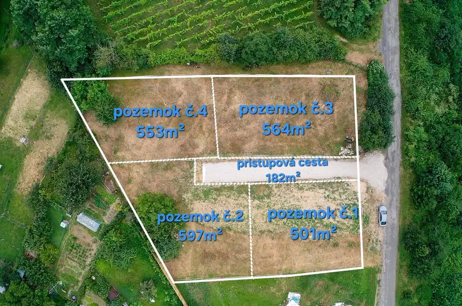
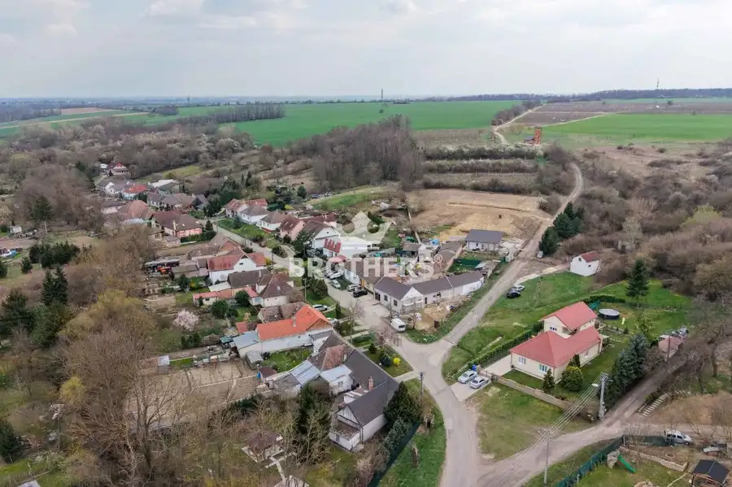
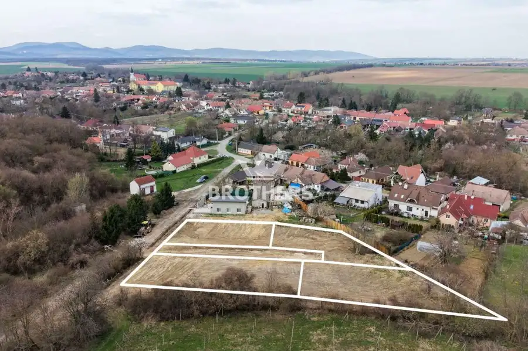
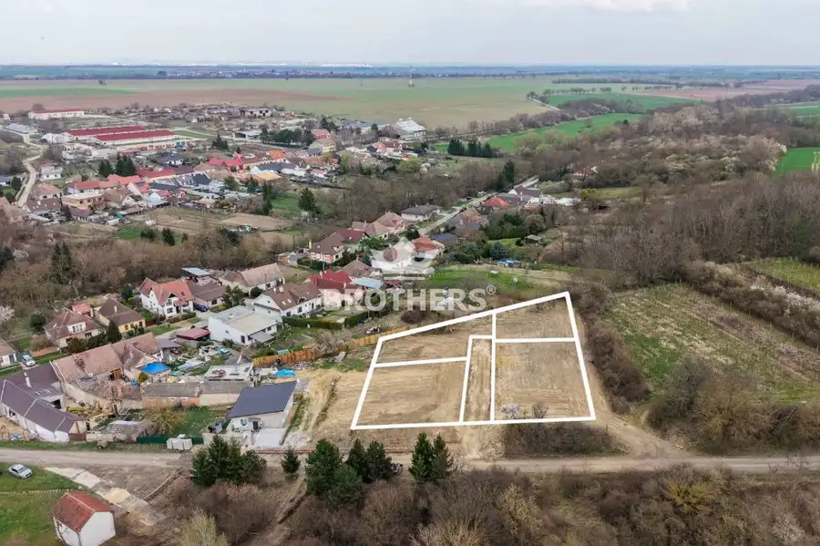
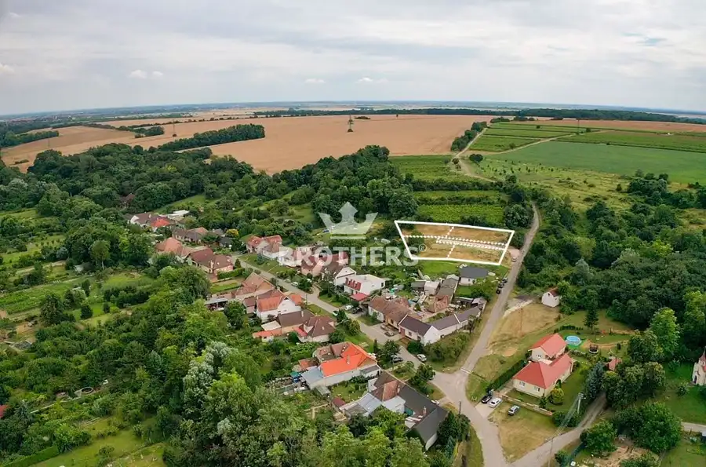
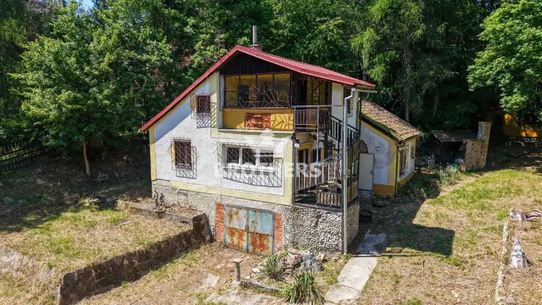
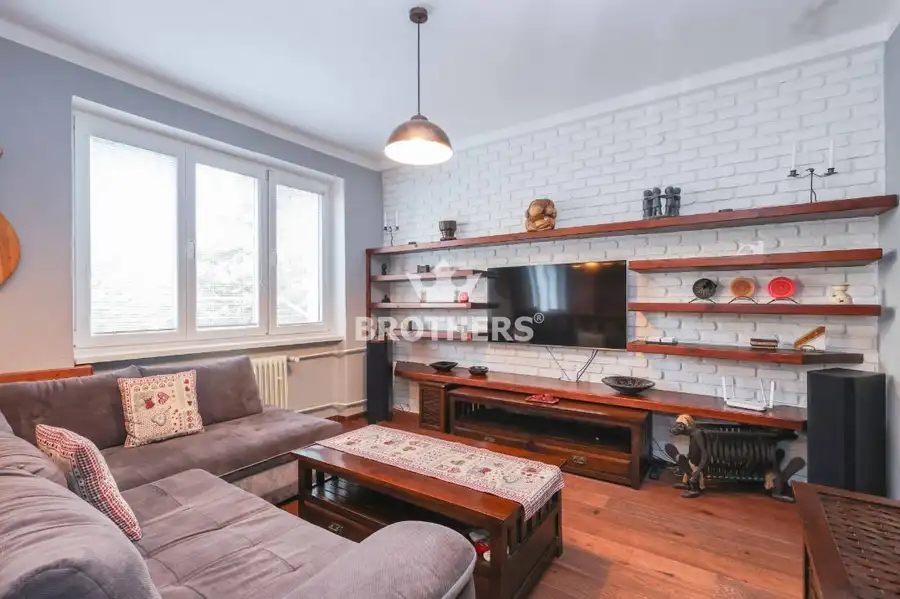

Na predaj, 4 atraktívne pozemky, všetky is,zaujímavá lokalita v tesnej blizkosti lesa,viničov s pekným výhľadom na čast obce Vištuk
Pezinok





- Plocha553 m²
O nehnuteľnosti
Realitná kancelária Brothers Vám ponúka exkluzívne na predaj pozemky v zaujímavej lokalite v tesnej blízkosti lesov a viničov v obci Vištuk Pozemky :- 4 samostatné pozemky so spoločnou prístupovou cestou - sú mierne rovinaté- nachádzajú sa na miernom svahu čím preukazujú svoju výhodu pekného výhľadu na časť obceUPI:- podľa UPI 3/2026 hlavná funkcia využitia plochy obytnej plochy rodinné domy- primárne funkcie bývanie v rodinných domoch - koeficient zastavanej plochy max. 20% - základná charakteristika : územie bloku slúži výlučne na bývanie v nízkopodlažnej zástavbe rodinnými domami.- celé UPI na vyžiadanie v RKNapojenia na IS (elektrina , voda)sa nachádzajú priamo na pozemku-siete sú bez šachty a elektroskrinkyKanalizácia je riešená septikom (podľa projektu 12m3) tú si záujemca realizuje na vlastné nákladyPozemok č.1 - v rozlohe 501m2Cena : 74 649- eur (149eur/m2)Pozemok č.2- v rozlohe 597m2 Cena : 88 953 ,- eur (149eur/m2)Pozemok č.3 - v rozlohe 564m2Cena: 87 420 ,- eur (155eur/m2)Pozemok č.4- v rozlohe 553 m2Cena : 85 715 ,- eur (155eur/m2)Prístupová cesta- má 182 m2 (45,5m2 na vlastníka)- rozpredáva sa medzi 4 budúcich vlastníkov pozemkov v pomere 1/4 na vlastníka - cena za 1/4 vlastníka 6779,50 eur - betónová prístupová cesta bude dokončená do 15.06.2026CENY POZEMKOV sú vrátane provízie a kompletnému právneho servisu realitnej kancelárie BROTHERS , betónovej prístupovej cesty a skolaudovaných sietí(voda + elektrika) KONTAKT:Ohľadne obhliadky kontaktujte makléra:Michal Blahovský+421 944 111 883, michal.blahovsky@gmail.com COPYRIGHT BROTHERS Real, s.r.o. – Fotografie, obrázky a texty sú autorským dielom a majetkom realitnej kancelárie BROTHERS Real, s.r.o.
Parametre
- Druh
- Pozemok pre rodinné domy
- Dátum zverejnenia
- 09. 04. 2026
- Elektrina
- Na pozemku - 230 V
- Funkčné využitie
- Výstavba rodinného domu
- Odpadové vody
- Nedostupné
- Plocha pozemku
- 553 m²
- Plyn
- Nedostupné
- Pripravenosť k výstavbe
- Schválené v územnom pláne
- Terén pozemku
- Mierne svahovitý
- Typ
- Predaj
- Voda
- Na pozemku - Diaľkový vodovod
Kde to je


Mohlo by Vás zaujímať

PozemokNové 88 953 €Na predaj, atraktívny pozemok všetky is, 597m2 v zaujímavej tichej lokalite v tesnej blizkosti lesa,viničov s pekným výhľadom na čast obce Vištuk Pezinok 597 m²
Chalupa, rekreačný domčekNové 249 000 €Na predaj, priestranná viac-izbová chata s veľkým pozemkom,1835m2, Limbach- Suchý vrch Limbach 140 m²
BytNové 229 000 €Znížená cena-predaj,komplet zariadený 2-izbový byt s klimatizáciou v Rači , Bratislava Rača, Bratislava 2-izbový59.81 m²3. podlažie